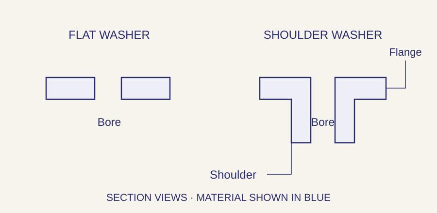

// ELECTRONIC HARDWARE
Insulating hardware for electronic assemblies.
A washer under a screw head and a sleeve through a panel address different contact points. Webson sources insulating washers, shoulder washers, sleeves and supports to part number or drawing, so the geometry and material match the assembly requirement.
Request an insulating hardware quote →Pricing and availability confirmed with quotation.
Match the component to the contact point
On a small screen, scroll sideways to see the full table.
| Component | What it does | What to specify |
|---|---|---|
| Flat insulating washers | Separate a fastener bearing face from an adjoining surface. | Inside and outside diameters, thickness, material and bearing load. |
| Shoulder washers | Add a sleeve-like shoulder through a hole as well as a flange at the face. | Bore, shoulder diameter and length, flange diameter and thickness. |
| Insulating sleeves | Cover a defined length around a fastener or other feature. | Bore, wall thickness, length and how the ends seat. |
| Nonmetallic spacers and supports | Set separation between boards, panels or other components. | Installed spacing, mounting details, material and the assembly’s mechanical and electrical requirements. |
A flat washer and a shoulder washer cover different surfaces

The shoulder on a shoulder washer extends into the mounting hole. Its length and outside diameter must suit that hole and the surrounding stack. A flat washer has no shoulder, so the fastener shank may still contact the hole wall.
On a small screen, scroll sideways to see the full table.
| Feature | Information to send | What to check |
|---|---|---|
| Bore and mating fastener | Actual bore, fastener diameter and required clearance. | Do not select the bore from a screw-size label alone. |
| Shoulder or sleeve length | Length inside the hole and any projection beyond it. | Too short can leave a contact path; too long can change how the stack seats. |
| Flange or washer thickness | Thickness under the fastener head or nut. | Include it when checking screw engagement and installed spacing. |
| Outside dimensions | Washer or flange diameter and shoulder outside diameter. | Check seating area, hole fit and clearance to neighboring parts. |
Specify the material and the required evidence
“Plastic” or “nylon” is not a complete electrical specification. Give the material grade and any required dielectric, temperature, flammability or environmental criteria. Where documentation is required, identify the test, specification or manufacturer declaration you need with the inquiry.
Check the assembly as well as the individual part
Insulating hardware is used around board mounts, panel fasteners and other points where the design calls for separation. The finished assembly still depends on its clearances, surfaces, fasteners and operating conditions. For example, a washer under the head does not address contact between the screw shank and a metal hole. Use the assembly drawing to identify every location that needs separation.
Before you order
Does a nylon washer make the complete joint electrically isolated?
Not by itself. Other contact paths may remain through the screw shank, nut, panel or nearby parts. The assembly design determines which surfaces need insulating hardware.
Can a flat washer replace a shoulder washer?
Only if the design permits it. The shoulder lines part of the hole; a flat washer covers the bearing face. Removing that shoulder changes the contact geometry.
How do I specify a shoulder washer?
Provide the bore, shoulder outside diameter and length, flange diameter and thickness, plus material and tolerances. A manufacturer part number or current drawing is preferable to a short size description.
Can insulating hardware be ordered with spacers and standoffs?
Yes. Send the complete bill of material and identify the parts that carry electrical, material or documentation requirements. Webson can quote the hardware together.
Quote the hardware with its material requirements
Send the full part number or drawing revision, quantity and requested delivery date. Include dimensions, material grade and required ratings or documents. If a particular manufacturer or source is mandatory, list that with the part.
Request an insulating hardware quote →Webson is an AS9120B and ISO 9001:2015 certified distributor. Include required certificates and traceability with your inquiry. View our certificate and quality scope.
Webson Fasteners · Serving customers since 1986 · Deer Park, New York